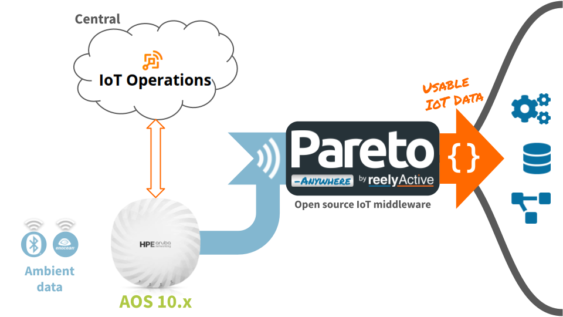

Configure Aruba IoT Operations
Our step-by-step guide to configure Aruba AP & compute infrastructure with Pareto Anywhere.
The TL;DR (Too Long; Didn't Read)
Configure (AOS 10.x) APs as IoT infrastructure for reelyActive's open source middleware
- What will this accomplish?
- The APs will forward Bluetooth Low Energy and/or EnOcean Alliance packets to a Pareto Anywhere instance.
- What's Pareto Anywhere?
- Pareto Anywhere is open source IoT middleware that makes the data from just about anything usable.
- AOS 10.x only?
- APs running AOS 8.x are also compatible with Pareto Anywhere (see Alternatives below).
Alternatives
Tutorials to consider instead
-

-
Configure an Aruba Instant AP
Configure access points running AOS 8.x to forward IoT data for processing by Pareto Anywhere.
-

-
Run Pareto Anywhere for Azure with Aruba APs
Use Aruba IoT Transport for Microsoft Azure and run our open source middleware as an Azure Function.
Prerequisites
One or more HPE Aruba Networking access points.
- Aruba Central
- AOS 10.x
Create a Connector Step 1 of 3
Instantiate an IoT Connector on the AP(s) or on an external server.
- Question?
- Answer.
- Question?
- Answer.
Browse to IoT Operations Part 1
Details to come.
Create the Connector Part 2
Details to come.
Confirm operation Part 3
Details to come.
Select the IoT Applications Step 2 of 3
Choose IoT Applications to classify the devices of interest.
- Question?
- Answer.
- Question?
- Answer.
Browse to IoT Applications Part 1
Details to come.
Details to come.
Install an IoT App Part 2
Details to come.
Details to come.
Observe device classification Part 3
Details to come.
Create a Transport Profile Step 3 of 3
Create an IoT Transport Profile.
- Question?
- Answer.
- Question?
- Answer.
Browse to Transport Part 1
Details to come.
Observing data in Pareto Anywhere requires no additional action if an instance based on the pareto-anywhere package is running, or, for quick-and-dirty validation, run barnowl-aruba as described below.
If a Pareto Anywhere installation based on the pareto-anywhere package is already present and running on the target computer on the host network, the data forwarded by the IoT Transport Profile should be available in both the web apps and APIs.
-

-
Run Pareto Anywhere on a PC
Install and run Pareto Anywhere on a personal computer to make sense of things.
-

-
Run Pareto Anywhere on a Raspberry Pi
Install and run Pareto Anywhere on a Pi to make sense of things.
Add the corresponding certificate.pem and key.pem files to the /config folder of pareto-anywhere. Pareto Anywhere will automatically detect these files on boot and use HTTPS & WSS for secure operation, which is required by IoT Operations.
To quickly validate that data is correctly received on the target computer on the host network, it is possible to run barnowl-aruba standalone to initiate a WebSocket server on port 3001 using the /aruba/aos10 route as follows:
git clone https://github.com/reelyactive/barnowl-aruba.git npm install npm start
If the access point is correctly configured, and at least one compatible Bluetooth Low Energy device is advertising in range, raddec data should appear in the console.
AOS 10 requires secure WebSockets (wss://): consult the barnowl-aruba documentation regarding the npm run secure option.
Enjoy the real-time data stream
Our cheatsheet details the raddec, dynamb and spatem JSON output from the open source IoT middleware.
-

-
Developers Cheatsheet
"Owl" you need to know about Pareto Anywhere's core data structures.


Tutorial prepared with ♥ by jeffyactive.
You can reelyActive's open source efforts directly by contributing code & docs, collectively by sharing across your network, and commercially through our packages.Where to next?
Continue exploring our open architecture and all its applications.
-

-
Directory of Devices
Browse all device configuration tutorials and development guides.
-

-
reelyActive Developers
Browse all developer documentation and tutorials.
-

-
reelyActive & HPE Aruba Networking
reelyActive is an Aruba Technology Partner